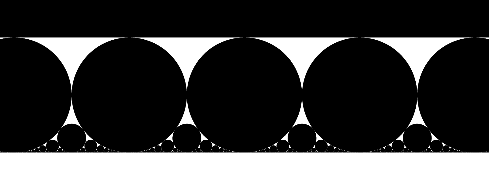
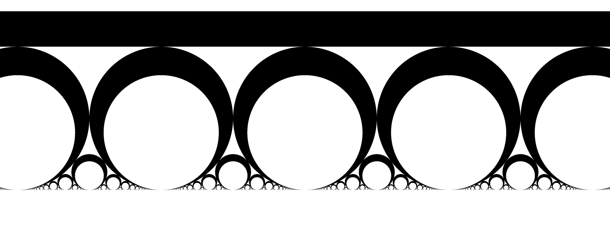

Below are interactive giga-pixel images of Gaussian and Eisenstein Ford Spheres.
In the upper half space (UHS) model of 3-dimensional hyperbolic space, Ford Spheres are a collection of horoballs tangent to the plane at infinity (z=0 plane in the model) at certain complex rational points. We are cutting collections of these spheres by a constant-z plane in the UHS model. The cuts therefore are horospheres. We've made the cuts at varying distances toward the boundary and higher hyperbolic distances are closer to the plane at infinity.
We've labeled the images on the left "balls", even though this corresponds to what Wikipedia calls Ford Spheres. A sample vertical slice through the UHS model of the Gaussian horoballs looks like:

In contrast, we've given the horoballs in the images on the right a finite thickness, rather than making them solid. A sample vertical slice through the UHS model of these Gaussian "spheres" looks like:

Click and drag the images below to look around. You can zoom in a lot!
And we'll close this page with an animation of the Eisenstein Ford Balls, increasing the depth of the slice.